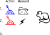
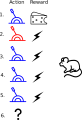
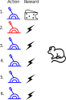
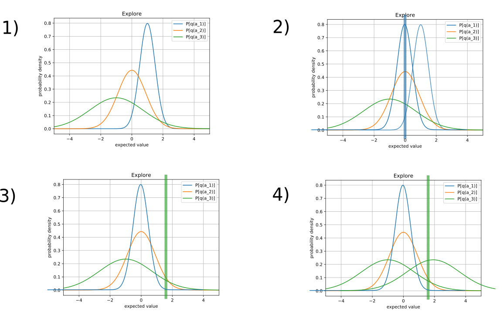
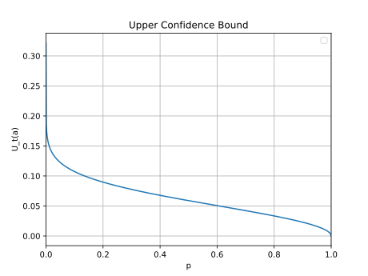
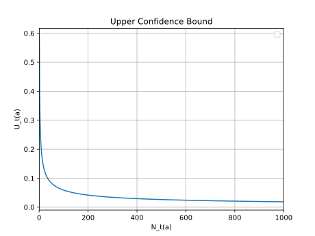
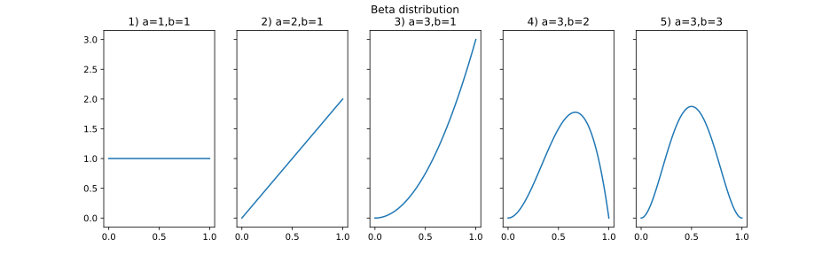
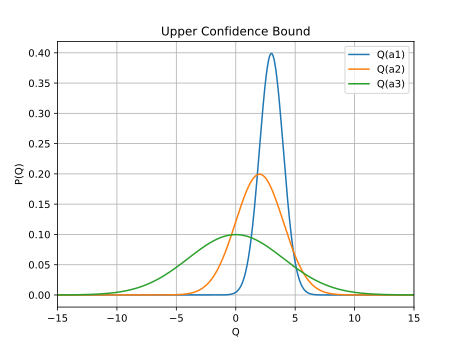

2. Exploration and Exploitatin
What is RL
- 결정 하는 것을, 학습 시키는 방법에 대한 과학
- 행위자는 정책, 가치 함수 그리고/또는 모델들을 학습 할 수 있다.
- 일반적으로 시간과 결과에 대해 고려해야 한다.
- 결정은 보상, 행위자의 상태, 환경의 상태에 영향을 준다.
단순화
행위와 보상의 상관관계를 탐구하기 위해 다른 부분들을 고정 시키자.
현실
- 여러개의 상태가 있고 여러개의 행위가 있다.
- 하나의 행위가 다른 상태와 보상에 영향을 준다.
- 행위에 대한 미래는 확률적으로 주어지고 해당 확률 분포는 시간에 의해 변한다.
현실의 구성요소
- 여러개의 상태
- 여러개의 행위
- 행위가 미래에 영향을 줌
- 미래 == 보상 + 상태
- 행위에 대한 미래는 확률적으로 주어짐
- 미래의 확률 분포는 시간에 의해 변동 될 수 있음
- 상태는 시간에 의해 변경 될 수 있음
단순화
- 한 개의 상태만 생각하자.
- 상태는 한 개. 여러 개의 액션
- 과거의 행위가 미래에 영향을 주면 복잡하다.
- 비연속적 구조 == 과거의 행위가 미래에 영향을 주지 않음.
- $A_{t}$를 조건으로 주었을때 $R_{t}$ 의 확률 분포는 고정되어 있음 또한 시간과 독립적임
예제
파랑 레버와 빨강 레버가 있다.
- 첫 번째 시도에서 파랑 레버를 당기면 치즈가 나왔다.
- 두 번째 시도에서 빨강 레버를 당기면 전기 쇼크가 나왔다.
- 세 번째 시도에서 치즈을 받기 위해서는 무엇을 당겨야 할까?
탐색 vs 활용
100 곳의 음식점이 있다 10 곳의 음식점만 가보고 특정한 곳이 최고 라고 할 수 있는가?
- online 결정 문제는 기본적으로 2개의 선택이 있다.
- 탐색: 지식을 증가 시킴
- 활용: 성과를 최대화 하기 위해 기존의 지식을 이용
- 제일 좋은 장기 전략은 단기적 이익을 희생 시켜야 할 수 있다.
- 우리는 전체적으로 최적화된 결정들을 찾기 위해 정보를 모아야 한다.
One-Armed bandit
- 한 개의 레버를 가진 빠징코 기계가 있다.
- 레버를 당기면 확률적으로 특정 금액이 나온다.
- 미래는 현재에 독립적이다.
Multi-Armed bandit
상황
- 여러 개의 레버를 가진 빠징코 기계가 있다.
- 레버가 10개가 있고 레버를 당길 때 마다 특정 금액이 나온다.
- 금액은 특정 레버에 의존적이며 확률적으로 액수가 결정된다.

형식화(formalize)
- 상태는단 한 개이다.
- 여러 액션 셋을 $A$ 라고 하자.
- 행위 == $0..N$ 레버 중 한 개를 당기는 행위
- 액션셋 == {"0번 당기기",...,"N 번 당기기"}
- 각 단계에 행위자는 행위 $A_{t} \in A $를 선택한다.
- 환경은 보상 $R_{t}$를 생산한다.
- 보상은 $P(r \mid a)$ 이며 고정되어 있다. 하지만 해당 확률 분포를 알지 못한다.
- 목적은 특정 시간 동안 누적 보상을 최대화 하는것이다. $\sum_{i=1}^{t}R_{i}$
- 미래(보상)는 현재의 선택과 독립적이다.
생각 할 것
- 특정 시간 즉 100 회 동안의 누적 보상을 최대화 할려면 몇 회를 탐색에 쓰고 몇 회를 활용에 사용해야 할까?
- 지도 학습에서 평가 기준이 테스트 셋인것과는 조금 다르다. 트레이닝 과 테스트 셋이 동시에 이루어 지는 느낌.
수식화
- 누적 보상을 최대화 하기 위해서는
- 각 레버의 개별 보상 기대값을 알아야 한다.
- 탐색과 활용의 전략을 택해야 한다.
Action value - 한 개
-
한 개의 팔을 가진 빠징코 기계의 개별 보상을 기대값으로 표현해 보자.
- 해당 팔을 $a_0$ 이라고 칭하자.
- 액션을 행한 후 받는 보상이 정해 지는 함수를 q 라고 정의하자. $q: \text{action} \to \text{reward}$
- 아래는 진짜 보상 함수이며 행위자는 알지 못한다 그러므로 추측 해야 한다. $$ q(a) = \mathbb{E} [ R_{t} ] $$
-
우리는 상호작용을 통해 (샘플링) 위의 진짜 보상 함수를 추측 해야 한다.
- 평균 값을 사용해 보자. $$ Q_{t}(a) = \frac{\sum_{n=1}^{T}R_{n}}{T} $$
Action value - 여러 개
위의 식을 확장해 보자.
-
여러 개의 액션 중 한 개를 선택 함으로 조건부 확률식을 세우자.
- 진짜 q 함수 $$ q(a) = \mathbb{E} [ R_{t} \mid A_{t} = a ] $$
-
샘플링을 통한 추측
| action | totalReward | 당긴 횟수 | 평균 | 수식 |
|---|---|---|---|---|
| 0 | 8 | 2 | 4 | $Q_{t}(0) = \frac{8}{2}$ |
| 1 | 10 | 1 | 10 | $Q_{t}(1) = \frac{10}{1}$ |
- $L$ 은 조건이 True 일 경우 1 아니면 0을 리턴 하는 함수 라고 정의 하자.
- 그러면 추측 보상 함수는 아래와 같이 정의 할 수 있다.
$$ Q_{t}(a) = \frac{ \sum_{n=1}^{t}R_{n}L(A_{n}=a) }{ \sum_{n=1}^{t}L(A_{n}=a) }$$
점진적 Action value
- 평균 함수는 기존 평균 값에 변화량을 적용해 주는 방식으로 같은 결과를 받을 수 있다.

- 위의 그림은 $Q_{1} = 1$ 이고 $R_{2} = 2$ 일때
- 기존 평균 대비 변화량을 $R_{2}$, $Q_{1}$ 으로 구할 수 있음을 도식화 했다.
- $q$는 진짜 action value 이고 $Q_{t}$ 는 추측 이다.
$$ Q_{t}(A_{t}) = Q_{t-1}(A_{t}) + \alpha_{t} \left( R_{t} - Q_{t-1}(A_{t})\right) $$ $$ \alpha_{t} = \frac{1}{N_{t}(A_{t})}, N_{t}(A_{t}) = N_{t-1}(A_{t}) + 1, \text{ and }, N_{0} = 0, \forall a $$
- $\alpha$ 를 단계 사이즈라고 한다.
쥐 예제1

- 보상
- 치즈: $R = +1$
- 충격: $R = -1$
- $Q_{2}$ 에서의 action value
- $Q_{2}(\text{Red}) = -1$
- $Q_{2}(\text{Blue}) = +1$
- $Q_{3}$에서 빨강을 당겨야 할까 파랑을 당겨야 할까?
- 파랑을 당겨야 한다. 액션 값이 더 크기 때문이다.
쥐 예제2

- 보상
- 치즈: $R = +1$
- 충격: $R = -1$
- $Q_{5}$ 에서의 action value
- $Q_{5}(\text{Red}) = -1$
- $Q_{5}(\text{Blue}) = -0.75$
- $Q_{6}$에서 빨강을 당겨야 할까 파랑을 당겨야 할까?
- 이제 다른 레버를 실험해 봐야 하지 않을까?
- 언제 greedy 하게 action value 를 사용 하는걸 멈춰야 할까?
Regret
- 어떻게 탐색과 활용을 최적화 할 것인가?
- 탐색과 활용이 최적화 되었다고 할 수 있는 평가 기준이 무엇인가?
- 우리가 최적 value 값을 알고 있다면 $$ v_{*} = \underset{a \in A}{\operatorname{max}} q(a) = \underset{a}{\operatorname{max}} \mathbb{E} [ R_{t} \mid A_{t} = a ]$$
- Regret 는 특정 단일 시점에서 손실된 기회라고 정의 하자.
- 잘못된 선택으로 특정 시점에 최대로 받을 수 있는 양을 받지 못하면 나중에 우리는 후회한다.
- 해당 단계에서 얼만큼 손실을 보았냐는 $최대량 - 선택으로받은량$ 으로 표현 할 수 있다. $$ \text{regre}t_{t} = v_{*} - q(A_{t}) $$
- 행위자는 학습 도중 볼 수도 알 수도 없다.
-
하지만 우리가 실험이 끝난 후 다른 알고리즘들을 평가하는대는 유용하다.
-
탐색과 활용의 최적화는 후회의 총합을 최소화 하는것과 같다. $$ L_{t} = \sum_{i=1}^{t}(v_{*} - q(a_{i}))$$
- 누적 보상 최대화 $\equiv$ 후회 총합 최소화
- 보상 최대화는 무한으로 갈 수 있다.
- 총합 최소화는 최대화 보다 수렴 할 가능성이 높다.
- 언제나 0 보다 큰값, 즉 양수
- 0 에 가까울 수록 좋음
- 누적 총합은 여러 에피소드 들로 확장 될 수 있다.
- 한 개 에피소드 보다 학습 전체로(여러 개의 에피소드) 관점을 확대 하자.
Regret with greedy
탐욕 알고리즘을 사용 하여 아래와 같은 결과를 얻었다고 가정해 보자.

| 레버 | 확률 | 보상 | 확률 * 보상 | $q(a) = \mathbb{E}[R \mid A] $ |
|---|---|---|---|---|
| 빨강 | $P(\text{cheese} \mid R) = 0.9$ | +1 | 0.9 | 0.8 |
| 빨강 | $P(\text{shock} \mid R) = 0.1$ | -1 | -0.1 | |
| 파랑 | $P(\text{cheese} \mid B) = 0.1$ | +1 | 0.1 | -0.8 |
| 파랑 | $P(\text{shock} \mid B) = 0.9$ | +1 | -0.9 |
- 위와 같은 확률표가 $q(a)$ 일때 탐욕 알고리즘을 사용해서 처음 두번에 파랑->치즈, 빨강-> 번개가 나오면
- 아래와 같이 예측 함수가 잘못 설정되어 파랑만 계속 당기게 된다 (물론 파랑->번개, 빨강->치즈가 나오면 좋은것만 한다.)
- $Q_{5}(\text{Red}) = -1$
- $Q_{5}(\text{Blue}) = -0.75$
- 이후의 regret 는 $\text{regre}t_{t} = v_{*} - q(a_{t}) = 0.8 - (-0.8) = 1.6$ 가 지속적으로 t 마다 발생된다.
- regret 가 무한이 커질수 있다.
- 우리는 얼마나 빨리 증가하는 가에 관심이 있다.
- 탐욕 정책은 선형 후회식이 만들어 진다. $1.6t$
Counting Regret
- 행위 후회$\Delta_{a}$를 최적값과 행위의 진짜값과의 차이 라고 정의하자. $$\Delta_{a} = v_{*} - q(a)$$
- 후회 총합은 행위당 선택된 횟수와 행위 후회값의 곱으로 나타낼 수 있다. $$L_{t} = \sum_{i=1}^{t} v_{*} - q(a_{i}) = \sum_{a \in A} N_{t}(a)(v_{*} - q(a)) = \sum_{a \in A} N_{t}(a)\Delta_{a}$$
- 좋은 알고리즘은 액션 후회 값이 높은 액션을 적게 선택하는 것이다.
- 하지만 우리는 액션 후회 값을 알지 못한다.
Exploration
- 우리는 값들을 찾기 위해 탐색 해야 한다.
- 많이 사용되는 방법 $\varepsilon\text{-greedy}$ 이다.
- 확률이 $1 - \varepsilon)$ 이면 greedy action 을 선택한다.
- 확률이 $\varepsilon$ 이면 random action 을 선택한다.
- 충분 할까?
- $\varepsilon$을 어떻게 선택해야 할까?
$\varepsilon\text{-greedy}$ 알고리즘
- 탐욕 알고리즘은 잘못된 최적값을 영원이 선택 할 수 있다.
- 탐욕 알고리즘은 선형적인 후회 기대값을 가진다.
- $\varepsilon\text{-greedy}$ 알고리즘은 탐색을 계속한다.
- 확률이 $1 - \varepsilon$ 이면 $a = \underset{a \in A}{\operatorname{argmax}} Q_{t}(a) $을 선택한다.
- 확률이 $\varepsilon$ 이면 random action 을 선택한다.
- $\frac{\varepsilon}{|A|}$ 의 확률로 계속 최적값이 아닌 값을 선택한다.
- $\varepsilon\text{-greedy}$ 알고리즘도 $\varepsilon$가 상수라면 선형적인 후회 함수를 가진다.
Lower Bound
- 최고로 좋은 알고리즘이 최소한으로 가질수 밖에 없는 에러값은 얼마일까?
- 즉 에러는 최소한 얼마보다 클까?
- 알고리즘의 점수는 최적 액션과 다른 액션들과의 유사도로 결정된다.
- 가장 어려운 액션 최적화 문제는 비슷한 보상 확률 분포를 가지나 평균값이 다른것 이다.
- 위의 속성을 gap $\Delta_{a}$ 그리고 확률분포의 유사도 $KL(P(r \mid a) \mid \mid p(r \mid a_{*}))$로 표현 가능하다.
- $KL(A \mid B)$ 에서 A와 B의 확률 분포가 똑같다면 0, 다르다면 0 보다 큰값을 가진다. 다를 수록 값이 커진다.
- $\frac{\Delta_{a}}{KL( p(r \mid a) \mid \mid p(r \mid a_{*}))}$ 로 정의 하면 확률 분포가 유사 할 수록 액션 후회 값과의 비가 커진다. 즉 어려운 문제가 된다.
공리(Lai and Robbins)
- 위의 아저씨들이 증명했다.
- 후회 총합 값은 로그값을 취한 단계보다는 크다.
$$ \lim_{t \to \infty } L_{t} \geq \log t \sum_{a \mid \Delta_{a} \gt 0 } \frac{\Delta_{a}}{KL( p(r \mid a) \mid \mid p(r \mid a_{*}))}$$
- 액션 후회$\Delta_{a}$가 0 보다 큰 모든 액션에 대해서 KL 유사도와 액션 후회의 비를 더한 값 * t
- 로그는 선형보다 훨씬 작다.
- 최선의 값을 정의 했으니 최선의 값에 근접 할 수 있는 알고리즘들에 대해 논의해 보자.
예제
- 아래의 1번과 같은 확률 분포를 추측 했일때 우리는 어디를 더 탐색해야 할까?
- 값이 추측이 안 될수록 해당 액션을 더 탐험해야 한다.

- $a_{1}$ 을 선택 했을때 보상 값 평균이 0 분산이 0.1 이 계속 나오면 우리의 $a_{1}$ 추측 확률 분포는 2번처럼 옮겨 갈것이다.
- 3번처럼 $a_{3}$ 을 선택 했을때 보상 값 평균이 1.7 분산이 1.7 이 계속 나오면 우리의 $a_{3}$ 추측 확률 분포는 4번처럼 옮겨 갈것이다.
Upper Confidence Bounds
- 좀전에는 최소 에러값을 사용했다. 범위를 지정하기 위해 이번에는 최대 신뢰 범위 값을 고려해 보자.
- 각각의 액션 값 마다 UCB 를 측정하자. UCB $U_{t}(a)$ 는 높은 확률로 $q(a) \leq Q_{t}(a) + U_{t}(a)$를 만족 시켜야 한다.
- 액션을 선택 할 때 UCB 가 최대가 되는 액션을 선택하자. $$ a_{t} = \underset{a \in A}{\operatorname{argmax}} \left( Q_{t}(a) + U_{t}(a) \right)$$
- 액션의 추측 값이 불확실 할 수록 더 많이 선택되어야 한다.
- 즉 액션의 선택 횟수 $N(a)$ 가 중요하다.
- $N_{t}(a)$가 적게 선택 되었다면 $\to$ $U_{t}(a)$ 는 커야 한다.(추측 된 값의 불확실성이 높다.)
- $N_{t}(a)$가 많이 선택 되었다면 $\to$ $U_{t}(a)$ 는 작아야 한다.(추측 된 값의 불확실성이 적다.)
- 중심극한 정리에 의해서 불확실성은 $\sqrt{N_{t}(a)}$ 로 평균적으로 감소한다.
- 우리는 여기서 최적 알고리즘을 이끌어 낼수 있는가?
알고리즘 아이디어
- 우리는 후회 총합을 최소화 할려고 한다. $\sum_{a}N_{t}(a) \Delta_{a}$
- 만약 $\Delta_{a}$ 가 크다면 $N_{t}(a)$ 가 적어야 한다.
- 만약 $\Delta_{a}$ 가 작다면 $N_{t}(a)$ 가 커야 한다.
- 모든 $N_{t}(a)$가 작을 수 는 없다.(총합이 t가 되어야 하기 때문에)
- 우리는$N_{t}(a)$ 에 대해 알고 있다.
- $\Delta_{a}$ 에 대해 알고 있는건 없을까?
Hoeffding's Inequality
공리
- $X_{1},...,X_{n}$ 이 i.i.d 에서 추출된 확률 변수이고 $[0, 1]$ 사이이다.
- $\bar X_{t} = \frac{1}{n} \sum_{i=1}^{n}X_{i}$ 를 샘플 평균이라고 하자. 그러면 아래의 식이 성립한다. $$ p(\mathbb{E} [ X] \geq \bar X_{n} + u) \leq e^{-nu^{2}}$$
- 확률 변수 X 의 기대값이 샘플 평균 + 보너스 보다 클 확률은 최대 $e^{-nu^{2}}$ 이다.
-
위 공리를 아래의 식으로 우리의 q 값에 적용 할 수 있다.
- 만약 $R_{t} \in [0, 1]$ 이라면 $$ p(q(a) \geq Q_{t}(a) + U_{t}(a)) \leq e^{-N_{t}(a)U_{t}(a)^{2}}$$
-
우리가UCB를 특정 확률 p 까지 라고 정의한다면
- $U_{t}(a)$ 를 아래와 같이 구할 수 있다. $$e^{-N_{t}(a)U_{t}(a)^{2}} = p$$ $$U_{t}(a) = \sqrt{ \frac{-\log p}{2N_{t}(a)}}$$
- 우리가 많은 보상을 관찰 할 수록 p를 줄인다면 e.g $p = 1/t = t^{-1}$ $$U_{t}(a) = \sqrt{ \frac{\log t}{2N_{t}(a)}}$$
- 위식은 지속적으로 탐색 할것이다.
- 하지만 $t \to \infty$ 로 갈수록 최적 액션을 더 많이 선택 할 것이다.
- 분모는 선형으로 증가하고 분자는 로그로 증가하기 때문에 점점 작아 진다.
P with Upper Confidence Bounds
- 변수를 아래와 같이 정의하고 고정 하자
- $q(a)$ 는 i.i.d 이며 $[0, 1]$ 사이의 값
- $Q_t(a) = 0.5$
- $N_t(a) = 10$
- P의 값을 지속적으로 줄여가면$U_{t}(a)$ 는 커지고 해당 액션을 탐색하게 된다.

$ N_{t} $ with Upper Confidence Bounds
- 변수를 아래와 같이 정의하고 고정 하자
- $q(a)$ 는 i.i.d 이며 $[0, 1]$ 사이의 값
- $Q_{t}(a) = 0.5$
- $U_{t}(a) = 1E-9$
- 많이 탐색한 액션일수록 값이 확실하기 때문에 적게 탐색 해야 한다.
- $N_{t}(a)$가 적게 선택 되었다면 $\to$ $U_{t}(a)$ 는 커야 한다.
- $N_{t}(a)$가 많이 선택 되었다면 $\to$ $U_{t}(a)$ 는 작아야 한다.
- 아래처럼 변수를 고정한 후 $N_{t}(a)$ 을 증가시키면 $U_{t}(a)$ 는 점점 감소 하지만 완전이 0 이 되지 않는다.

공리 (Auer et al. 2002)
UCB 알고리즘 ($c = \sqrt 2$) 는 후회 총합 기대값을 로그값으로 같는다. $$ L_{t} \leq 8 \sum_{a \mid \Delta_{a} > 0} \frac{\log t}{\Delta_{a}} + O(\sum_{a}\Delta_{a}), \forall t$$
결론
UCB 를 사용하면 후회 총합은 로그값이다. $$O(\log t) \leq L_{t} \leq O(\log t)$$
UCB
$$ a_{t} = \underset{a \in A}{\operatorname{argmax}} Q_{t}(a) + c \sqrt{ \frac{\log t}{N_{t}(a)}}$$ - C는 하이퍼 파라미터로 사용되기도 함. (상수 취급) - 얼마나 빨리 배울까 정도의 느낌 - 보통 1로 시작해 0,2,3 를 테스트 함 - 특정 액션이 오래동안 선택이 안되면 보너스 값이 커짐 - 다른 모든 액션 값들보다 결국엔 커짐 그래서 선택되면 보너스 값이 확 작아짐 - 직감 - $\Delta_{a}$ 가 크다고 가정해보자 그렇다면 - $N_{t}(a)$ 가 적을것이다. 왜냐하면 $U_{t}(a)$애 의해서는 아주 가끔씩 전체 gap을 평가 하기 때문이다. - 그렇다면 $\Delta_{a}$ 가 작거나 또는 $N_{t}(a)$ 가 작거나 이다.
Bayesian Bandits
- 보상의 확률 분포를 파라미터와 액션을 사용해 추측해보자.
- 액션의 보상 확률 분포를 조정하는 파라미터들을 $\theta$ 라고 하자.
- 우리는 $q(a) = p(R \mid \theta, a)$ 를 알고 싶다.
- 과거의 확률을 발견된 증거 쪽으로 조금 변경하는 베이지안 추론을 사용해 보자. $$p(R \mid \theta, a) \propto p(R_{t} \mid \theta, a)p_{t-1}(\theta \mid a)$$
- 사후 확률은 $p(R \mid \theta, a)$새로운 보상의 확률과 $p(R_{t} \mid \theta, a)$ 사전 확률의 $p_{t-1}(\theta \mid a)$ 곱에 비례한다.
- 많은 사전 정보를 인코딩 할 수 있게 해준다. $p_{0}(\theta \mid a)$
예제
- 슬롯머신이 베르누이 분포를 가지고 있다고 하자. 보상은 0 아니면 1이다.
- 모든 액션의 이전 분포는 $[0, 1]$ 사이에 균등분포 한다
- 베타 분포로 사후 확률분포를 모델링하자$Beta(\alpha_{a}, \beta_{a})$ 최초 $\alpha_{a}=1, \beta_{a}=1$ 로 균등하게 시작한다.
- 이후 보상에 따라 파라미터를 변경한다.
- $\alpha_{a_{t}} \leftarrow \alpha_{a_{t}} + 1 \text{ when } R_{t} = 0$
- $\beta_{a_{t}} \leftarrow \beta_{a_{t}} + 1 \text{ when } R_{t} = 1$
- TODO 보상 0에 알파가 +1, 보상 1에 베타 +1 되는 부분이 이상하다 확인 해보자.
- 보상이 $R_{1} = 1, R_{2} = 1, R_{3} = 0, R_{4} = 0$ 으로 발생된다면 위의 식에 의해 아래와 같이 베타 분포가 변경된다.

- 최초에 q 가 0 인지 1인지 알지 못한다.
- 보상이 1이 두번 연속 나오면서 3)번 그림 q 는 1 일가능성이 높아진다.
- 보상이 0이 한번 나오면서 4)번 그림 q 는 1 일가능성이 없다.
- 보상이 0이 한번 더 나오면서 5)번 그림 q 는 0.5 일 가능성이 가장 높아진다.
Bayesian with UCB

- 액션 함수의 사후 확률 분포를 계산하면 위처럼 표현 할 수 있다.
- 사후 확률을 사용해서 UCB 를 사용 할 수 있다. $$U_{t}(a) = c\sigma(a)$$
- $Q_{t}(a) + c\sigma(a)$을 최대화 하는 액션을 선택
Policy
- Policy $\pi(a)$ 를 바로 배우는건 어떨까?
- policy 는 $f: state \to action$ 함수 이다. 하지만 여기서 state 는 한 개 이기 때문에 action 만 표현
- $\pi(a)$ 는 해당 액션이 실행될 확률로 정의 할 수 있다.
- 정책을 value 함수 없이 학습 할 수 있을까?
- $H_{t}(a)$ 를 preference 라고 정의 하자. $\pi(a): [0, 1] \text{ and } \sum_{a} \pi(a) = 1$ $$ \pi(a) = \frac{e^{H_{t}(a)}}{ \sum_{b} e^{H_{t}(b)}}$$
- 선호도는 value 함수와 꼭 연관되지 않아도 된다.
- 선호도를 학습 가능한 파라미터로 보자.
- 어떻게 선호도를 학습 할 건인가?
Policy gradients
- Idea: 좋은 액션이란 보상의 기대값이 증가하는 것이다.
- 기대값의 증가를 경사도 상승으로 생각 할 수 있다.
- 슬롯머신에서는
$$ \theta = \theta + \alpha \nabla_{\theta}\mathbb{E}[ R_{t} \mid \theta ]$$
- $\theta$ 는 정책의 파라미터이며 선호도에 영향을 준다고 정의하자.
- $\theta$ 를 변경하면 정책이 변경되고 그러면 보상이 변경된다.
- 경사도를 구 할 수 있을까?
Gradient bandits
위의 식을 수학을 사용해 계산 가능한 식으로 재 표현해 보자.
- $\theta$를 주었을때 기대값은 $\theta$ 정책을 사용 할때의 액션 별 보상 기대값과 같다. $$\nabla_{\theta} \mathbb{E} [ R_{t} \mid \theta ] = \nabla_{\theta} \sum_{a} \pi_{\theta}(a) \mathbb{E} [ R_{t} \mid A_{t} = a ]$$
- 액션별 기대 보상은 $q(a)$ $$ = \nabla_{\theta} \sum_{a} \pi_{\theta}(a) q(a)$$
- $q(a)$ 는 $\theta$ 와 상관없음으로 정책만 미분하면 된다. $$ = \sum_{a} q(a) \nabla_{\theta} \pi_{\theta}(a) $$
- 1 을 곱해도 상관없다. $\frac{\pi_{\theta}(a)}{\pi_{\theta}(a)} = 1$ $$ = \sum_{a} q(a) \frac{\pi_{\theta}(a)}{\pi_{\theta}(a)} \nabla_{\theta} \pi_{\theta}(a) $$
- 식을 정리 $$ = \sum_{a} \pi_{\theta}(a) q(a) \frac{\nabla_{\theta} \pi_{\theta}(a)}{\pi_{\theta}(a)} $$
- 기대값으로 다시 변경 $a \to A_{t}$ 로 변경됨 $$ = \mathbb{E} \left[ R_{t} \frac{\nabla_{\theta} \pi_{\theta}(A_{t})}{\pi_{\theta}(A_{t})} \right] $$
- 미분 함수를 원래 함수로 나누면 원래 함수의 로그 미분과 같다. $$ = \mathbb{E} \left[ R_{t} \nabla_{\theta} \log \pi_{\theta}(A_{t}) \right] $$